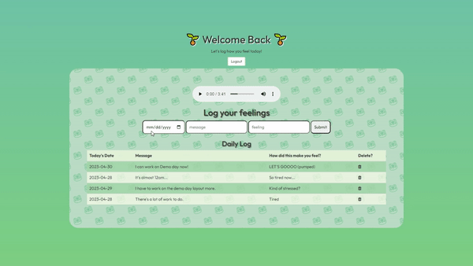
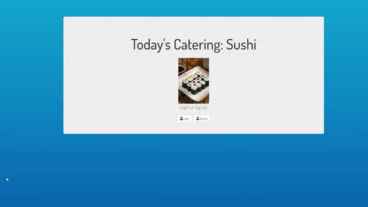
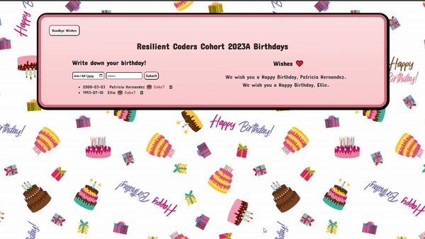
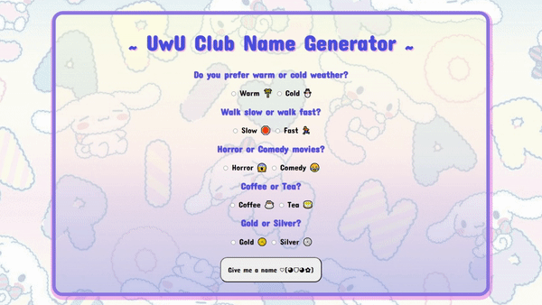
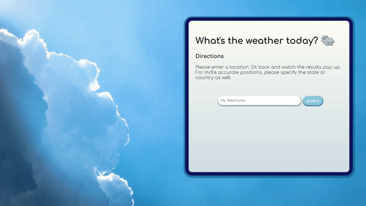
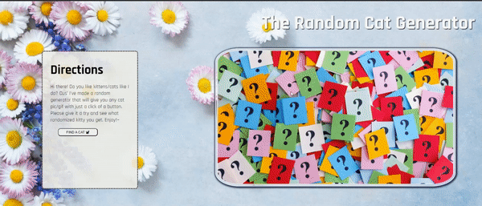

Most recent to oldest...
Community Catalyst Full-stack App

Discover a hub of activism and support, connecting you with like-minded individuals and organizations. Share information, discuss social issues, and coordinate impactful events effortlessly. Access valuable resources and funding opportunities to fuel your mission and amplify your voice.
During a week-long group collaboration, the class was split into three developer groups: Front-end, Back-end, and DevOps. Joyce served as the project manager for the DevOps team and they were responsible for creating and assigning tickets to the appropriate software engineers, as well as managing the merging of pull requests on Github.The team also acquired new Git techniques and efficiently organized the backlog for the entire class.
When errors were detected in the code, DevOps took on the task of debugging and then contacted the respective engineer to address the issues. After confirming the correctness of the code, it was merged into the main branch. Furthermore, Joyce participated in daily meetings with her fellow project managers to exchange updates and discuss progress, a routine that took place prior to the official stand-up sessions. Once the full-stack application was completed, Joyce hosted the site on Render, and the class collectively presented the final project on the last day of the course.
Cosplay Collection Full-stack App

Introducing Cosplay Collection: the app to save and track your cosplays, with photo references, links, and organized convention photos. Elevate your cosplans!
A comprehensive full-stack application centered around one of Joyce's beloved pastimes: cosplay. It incorporates CRUD methods and utilizes MongoDB and Cloudinary to store user data and input. Additionally it is structured using the MVC format, incorporates Node packages, and utilizes EJS templating. Joyce intends to use the app personally and has ambitions to introduce additional features in the future.
Mood Tracker Back-End

A personal log where an user can sign up for an account or sign in to their profile and make an entry of their feelings of the day.
Joyce designed this hypothetical app as a practice in CRUD operations. Her MongoDB cluster stores user data containing dates, emotions, and messages. Each entry can be selectively accessed and can be deleted. Inside the EJS, user inputs can be structured in a table format, and CSS is applied to ensure alternating row colors.
Sushi Catering Back-End

Effortlessly managing company food orders has never been more convenient! Our featured cuisine today is sushi, and this application makes it a breeze to maintain an organized record of everyone's orders.
Joyce designed this hypothetical app as a practice in CRUD operations. Users can log into their accounts and submit their orders, which are then displayed to everyone in a feed-like format. An "intern" designated for the task can update the status of each request, marking them as either 'completed' or 'pending' (with 'pending' as the default). Every user will promptly observe these changes as soon as they are made, thanks to the seamless integration with MongoDB for user data storage.
2023A Birthday Wishes Back-End

Wish the members of your cohort a sincere happy birthday! ~ This is a board of saved birthday messages and most importantly, cake is served with love!
This CRUD application (without a need to sign-in/login) generates birthday wishes for the provided name, also displaying the birthdate. It allows users to send a cake (emoji) as a gift and provides the capability to delete specific wishes from the MongoDB database, along with the ability to update stored data. Utilizing template literals in EJS, the birthday message remains consistent, with the only alteration being the newly inputted name. Furthermore, the application offers a 'Clear All Wishes' button for convenience.
UWU Club Object-oriented Programming

By making specific selections, you can discover an endearing and personalized name just for you. Unveil the charming name that destiny has in store!
The JavaScript code follows an Object-Oriented Programming (OOP) structure, with its functionality driven by event listeners. By utilizing conditionals to compare the quantities of checked radios from both group A and group B, the code randomly selects a first and last name from a designated array. Joyce devised this approach as a personalized method for constructing a name generator tailored to the user's selections.
No You Javascript

Engage in a game of 'No YOU,' a card matching game that will genuinely make you reconsider your victory.
Joyce devised a card matching game inspired by the renowned Uno, albeit with certain modifications. She utilized JavaScript to trigger functions when specific conditions were satisfied. Upon completing the game, an alert featuring a cheeky message would pop up and render the game board inactive. An option to reset the board became accessible once the alert was dismissed. Joyce found this assignment to be quite demanding yet gratifying.
Pokemon Relax~ Accessing APIs

Watching the sunset with your Pokemon party has never been so magical. Summon your beloved pocket monsters individually and bask in the cozy atmosphere.
It began by discovering a Pokemon API. Recognizing its potential as a fan favorite, Joyce aimed to infuse creativity into its usage. While exploring the API's data, she stumbled upon the back sprites and was struck by inspiration. Joyce conceived the idea of crafting a scene featuring one's most beloved Pokemon, enjoying a sunset with oneself after their arduous quest to catch them all. Her goal was to evoke the same atmosphere as the ending credits of every Pokemon game. Hopefully Joyce succeeded in achieving that desired ambiance.
Joyce used Photoshop to meticulously isolate an image of a cliff while making the background transparent and color-graded it to match a warm setting. Subsequently, she skillfully employed CSS and z-index to craft a layered visual composition: a sunset GIF in the background, the cliff image in the middle ground, and HTML elements in the foreground, effectively creating a sense of depth.
What's the Weather? Accessing APIs

Have you ever pondered about the weather in a different corner of the world? Look no more! Simply enter a city or state, and this application will provide you with the current temperature.
For the purpose of honing her skills in retrieving APIs, Joyce employed template literals to present the essential information on the DOM obtained from the weatherAPI. Utilizing the user's search as a query, Joyce implemented specific code to ensure that the accurate weather data would be displayed if the API contained information about the location.
Random Cat Generator Acessing APIs

Delight yourself with an unexpected but purr-fect image or GIF featuring an adorable cat.
An exercise in fetching data from an API and subsequently showcasing it on the DOM. Joyce, who happens to have a pet cat, was intrigued by the idea of crafting this random cat generator. With each click, it triggers a meow sound and updates the current image or GIF.
Genshin Slots Javascript

How about transforming a game of chance into an even more thrilling gambling experience? Genshin Slots is here to challenge your ability to come out on top in those 50/50 situations. Let's find out if your gacha luck is truly exceptional!
A slot machine inspired by Joyce's mobile game obsession features card illustrations borrowed directly from the game itself. Her dream is to eventually incorporate all of these illustrations into the slot machine, although the odds of winning in such a scenario would be exceedingly slim. In her pursuit of fairness, Joyce limited it to just five images for the time being. Furthermore, while one would spin the reels and use the in-game currency, the game's original music will play in the background.
My To-do List Javascript

Effortlessly manage your daily tasks using this convenient to-do list application! Never lose sight of what needs to be accomplished and what's already checked off.
Joyce created an user-friendly daily task tracker, featuring the ability to clear the entire list and highlight completed items. She aimed for a lively appearance by incorporating vibrant shades of pink and purple, while also experimenting with gradient effects.
Froggy Horoscope Javascript

Curious about which frog personality matches yours? Enter your birthdate, and your astrological sign will determine your unique froggy counterpart!
An enjoyable project where Joyce matched peculiar and humorous frog images to her friends' astrological signs. During the coding process, she gained proficiency in working with conditional statements and employing various methods. In the end, Joyce pleased with the outcome, and based on the feedback she received from her peers, they found it highly entertaining.
LevelGround Front-End

Joyce painstakingly reconstructed this website to the best of her abilities, using an image as her reference. Employing flexbox, She successfully ensured that the images and text adapt to different screen sizes, which was a significant time-saver compared to using floats. Although Joyce invested time in learning floats previously, she doesn't regret it.
JWLIA Front-End

Joyce was given an image of one of the JWLIA pages to recreate and she managed to implement all of her current knowledge on HTML and CSS to make it as accurate as possible. And the best thing is, it's responsive with different screen sizes!
Tech Crunch Front-End

Joyce meticulously redesigned Tech Crunch's homepage, which presented numerous elements to manage. Crafting a responsive layout posed a notable challenge, but she ultimately succeeded in achieving this goal. Additionally, Joyce revisited the project a few weeks after submission to incorporate newfound techniques she had acquired.